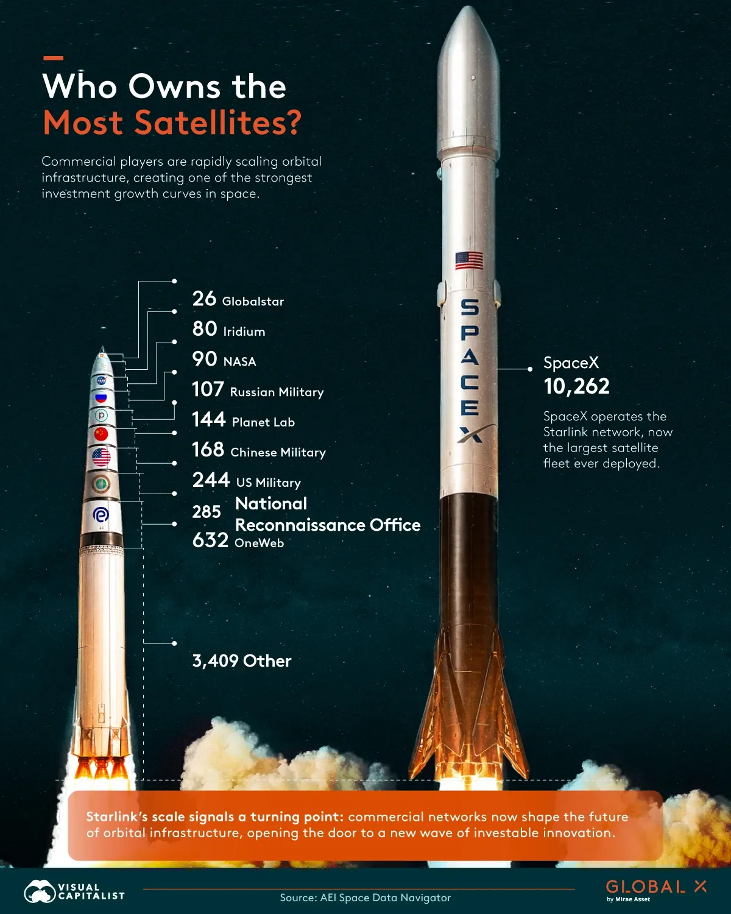
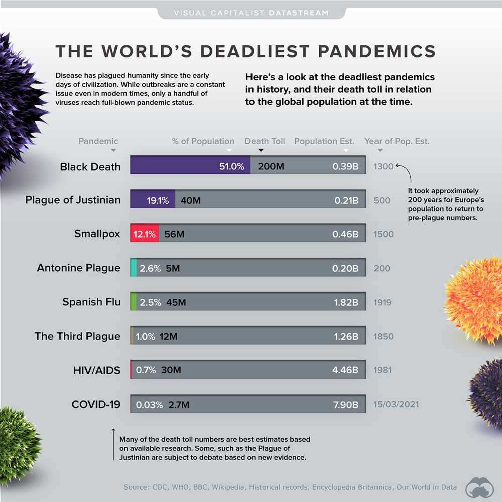
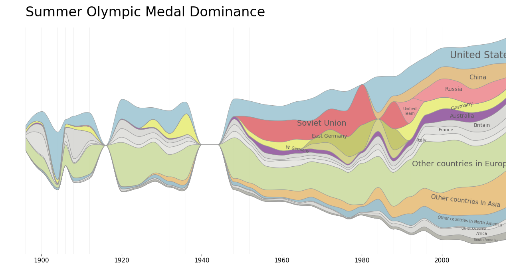
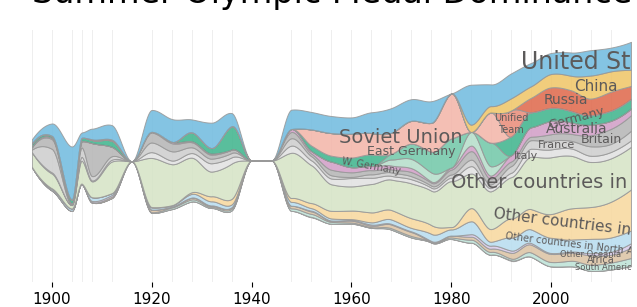

Bailey Sherwood Portfolio
Space Science

Part 1 Photos.


Gestalt

Objective:
The objective of the image is to show that SpaceX
overwhelmingly owns more operational satellites than
any other organisation.
Preattentive Processing:
The first thing that grabbed my attention was the size
of the SpaceX rocket, showing that SpaceX has launched
substantially more satellites than any other organisation.
Gestalt Law:
The infographic uses the Gestalt Law of Proximity by
placing all non-SpaceX satellite owners close together
beside one rocket. This causes viewers to perceive them
as a single comparison group, while SpaceX is isolated
to emphasise its significantly larger satellite fleet.
Visual Comparison Accuracy:
The image mainly uses length to compare satellite
ownership, with the height of the rocket representing
the number of satellites.
Reference:
Visual Capitalist. (2026).
Ranked: Who owns the most satellites?
Voronoiapp.com.
View the original infographic

The objective of this task was to gather source information and check the validity of the data presented online against true facts/statistics in order to see how robust the data set was. The chart compares the deadliest pandemics by the percentage of global population they killed, showing that the Black Death had the greatest percentage of impact on the population. It uses the junk chart well with the question, data and visuals all working together, but 'deadliest' can be misleading due to the pandemics rankings by population percentage rather than total deaths. The graphics colours may also cause a reduction in clarity with no clear trend.
Reference:
Ang, C. (2020). 5 Visualizations we wish we had published in march 2020. Howmuch.Net. https://howmuch.net/articles/visualization-we-wish-we-had-published-march-2021

Introduction to Python

Introduction to Data Visualisation
Discussion:
Above is the certificate completeion for 2 data camp courses, Introduction to Python and Introduction to Data Visulisation. After completing each I feel I have gained a well rounded amount of knowledge in which I feel confident that I will be able to work with a data set and create a visulisation out of it.

Original Visulisation

Modified Visulisation
The aim of this exercise was to recreate a visulisation in which I chose the hystory of the Summer Olympics. I first collected Olympic data and used python to organise the medal results by country and olympic year. Using matplotlib I was able to visulise the data and add colour. After recreating the original image I decided to recolour it using colours that people can see even if they are colour-blind.
Comments
Figures:
The data above displays the growing number of tracked objects in Earth orbit over time.
Personal Reflection:
I find the data quite interesting as a space science student. I would have thought there would be a much stronger upward trend as technology evolved, but the increase appears relatively linear.
Reference:
Elkins, K. (2025, June 16). Tracking satellites and space debris in Earth orbit (February 2024). NASA Scientific Visualization Studio.
https://svs.gsfc.nasa.gov/5258/#media_group_373930